Compétence 5: Conduire un projet
Compétences essentielles: J'ai identifié les besoins métiers des clients et des utilisateurs
en communiquant efficacement avec les différents acteurs d'un projet
Niveau de maîtrise: assez
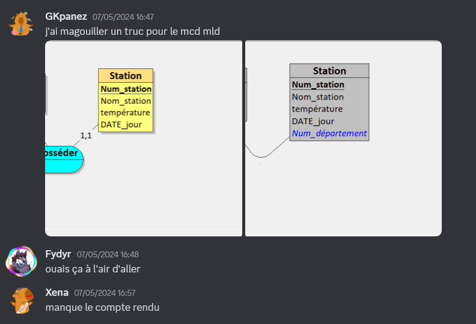
en respectant les règles juridiques et les normes en vigueur
Niveau de maîtrise: bien

en sensibilisant à une gestion éthique, responsable, durable et interculturelle
Niveau de maîtrise:

en adoptant une démarche proactive, créative et critique
Niveau de maîtrise: assez
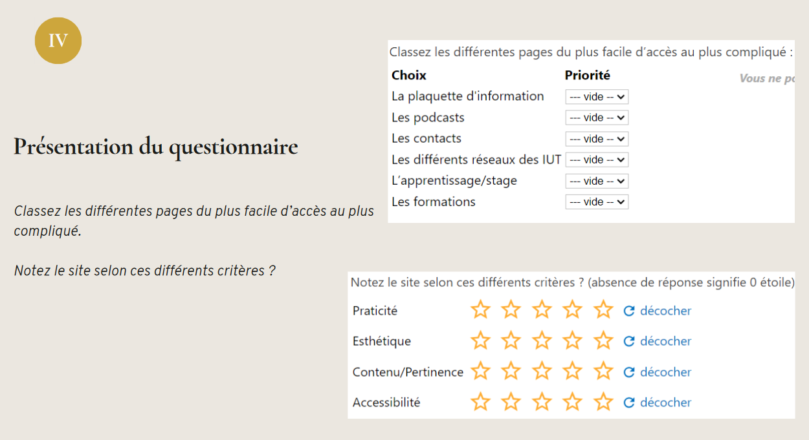
Apprentissages critiques: J'ai appris et suis à même d'identifier les besoins métiers des clients et des utilisateurs car
j'ai appréhendé les besoins du client et de l'utilisateur
Niveau de maîtrise: assez
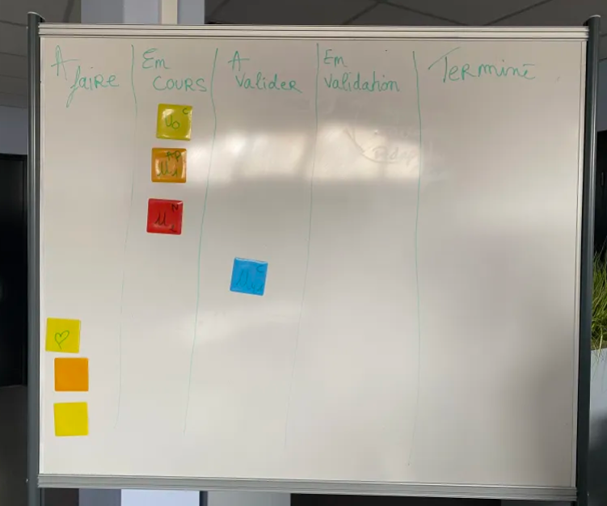
j'ai mis en place les outils de gestion de projet
Niveau de maîtrise: assez
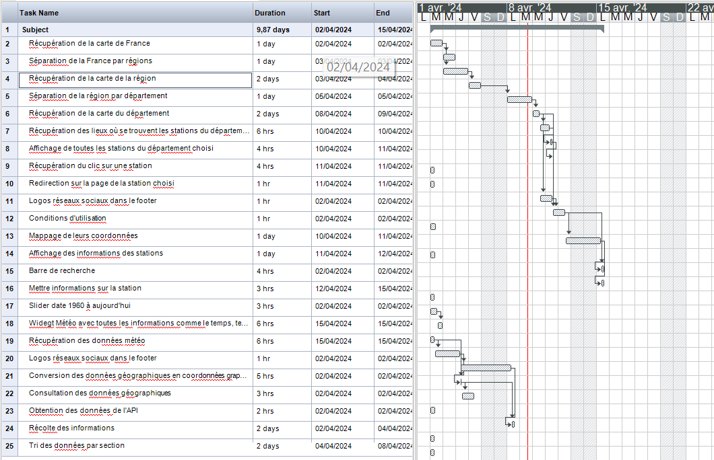
j'ai identifié les acteurs et les différentes phases d'un cycle de développement
Niveau de maîtrise: bien
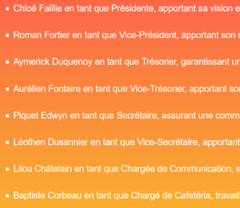
Compétence 6: Collaborer au sein d'une équipe informatique
Compétences essentielles: J'ai identifié mes aptituds pour travailler dans une équipe informatique
en inscrivant sa démarche dans une équipe pluridisciplinaire
Niveau de maîtrise: bien
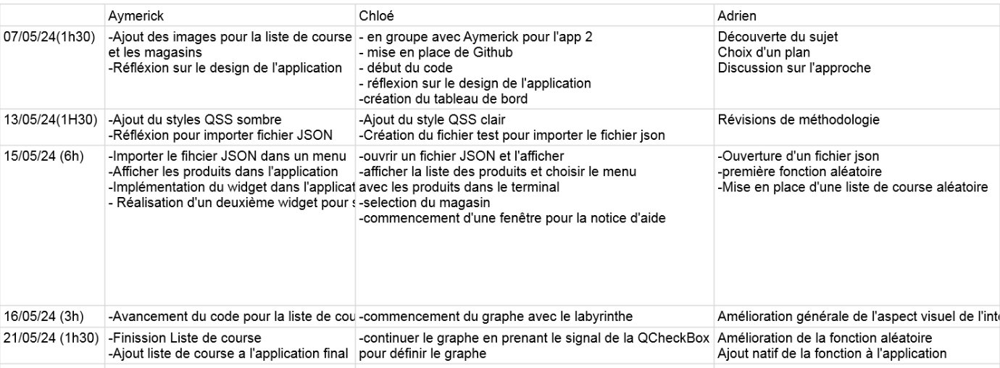
en accompagnant la mise en oeuvre des évolutions informatiques
Niveau de maîtrise: bien
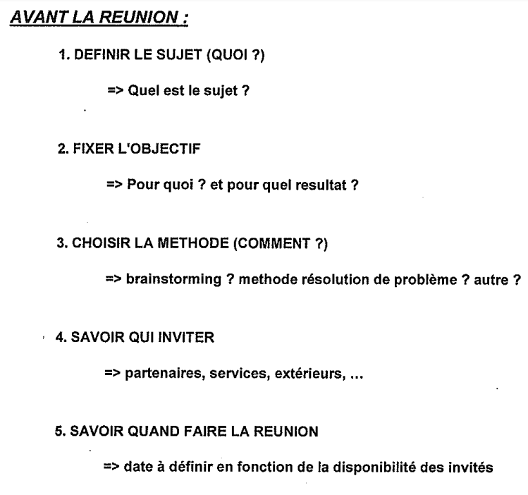
en veillant au respect et contraintes juridiques
Niveau de maîtrise: peu

en développant une communication efficace et collaborative
Niveau de maîtrise: bien
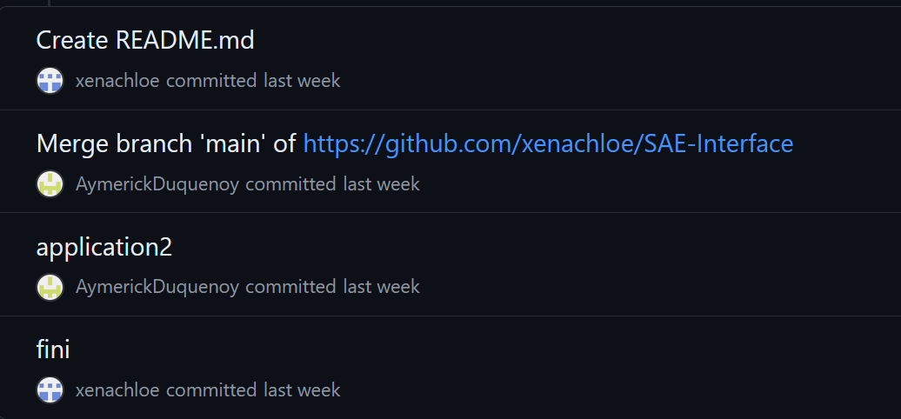
Apprentissages critiques: J'ai appris et suis à même d'identifier les aptitudes pour travailler dans une equipe informatique car
j'ai appréhendé l'écosystème numérique
Niveau de maîtrise:

j'ai découvert les aptitudes requises selon les différents métiers informatiques
Niveau de maîtrise: bien
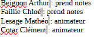
j'ai identifié les status, les fonctions et les rôles de chaque membre d'une équipe pluridisciplinaire.
Niveau de maîtrise: bien
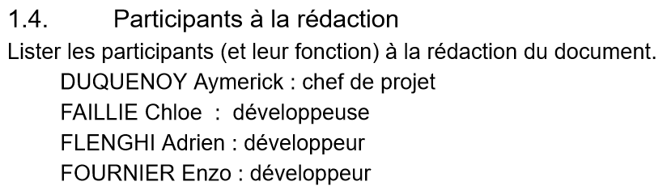
j'ai acquis les compétences interpersonnelles pour travailler en équipe.
Niveau de maîtrise: bien
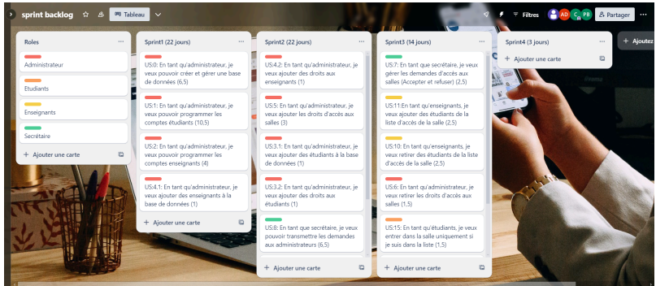